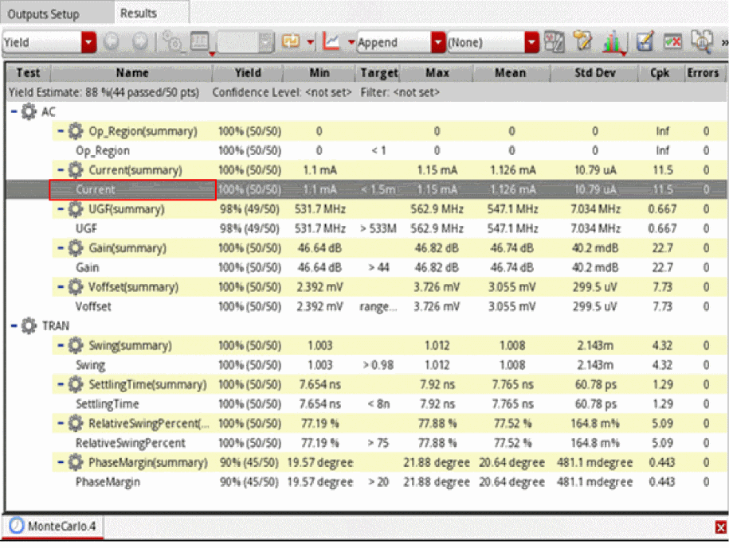
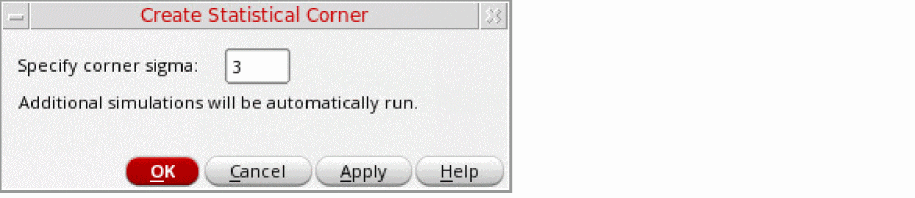
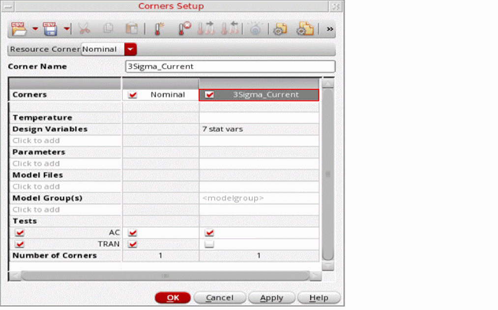

Creating K-Sigma Corners from a Standard Monte Carlo Run
If you have already run a standard Monte Carlo analysis, you can create a K-Sigma corner from the results as a post-processing step.
To create K-Sigma statistical corners from a standard Monte Carlo simulation:
-
On the History tab of the Data View assistant, right-click the history for the Monte Carlo run for which you want to create K-Sigma corners, and then click View Results.
The results of the Monte Carlo run are displayed in the Yield view of the Results tab.
 -
Right-click a specification for which you want to create K-Sigma corners and then choose Create Statistical Corner (Specify Yield in Sigma).
The Create Statistical Corner form opens.
 - In the Specify corner sigma field, enter a sigma value less than four. The default is 3.
- Click OK to close the form.
An additional simulation is run. After the simulation is complete, the K-Sigma corner created for the specification is displayed in the Corners Setup form.

The K-Sigma corner is named as NSigma_specification_name, where N is the sigma value that you specified in the Create Statistical Corner form. For the sigma value 3 and the specification Current, the name of the corner is 3Sigma_Current.
Related Topics
Workflow of the K-Sigma Corners Method
Running the K-Sigma Corners Method
Return to top